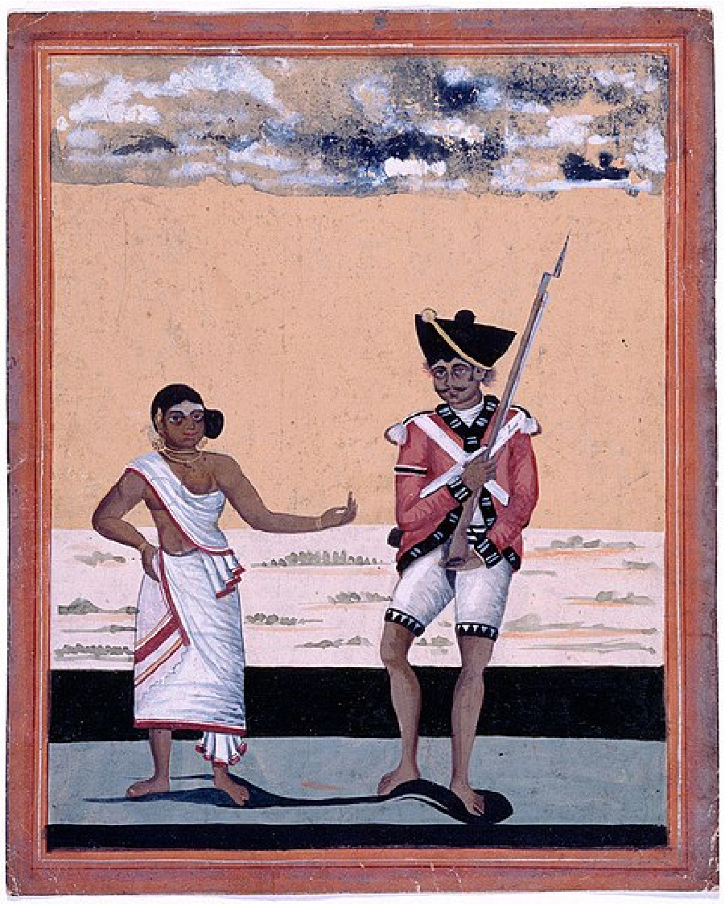

기업과 산업 / 상업과 유통
동인도회사 — 장사하러 간 회사는 왜 세금을 걷었을까
영국 동인도회사가 무역과 군사력, 현지 권력과의 협상을 통해 통치의 주체가 된 과정을 읽습니다.
이야기 읽기A NEW WALK
이번에 함께 읽을 이야기 5편입니다.
소주제별 서가 ↗
기업과 산업 / 상업과 유통
영국 동인도회사가 무역과 군사력, 현지 권력과의 협상을 통해 통치의 주체가 된 과정을 읽습니다.
이야기 읽기
컴퓨터와 디지털 / 인터넷과 통신
모스의 전신 실용화와 공공 자금, 전선과 부호를 통해 정보가 사람의 이동과 분리된 변화를 읽습니다.
이야기 읽기
돈과 금융 / 돈과 화폐
1716년 은행과 1717년 무역회사, 국가 부채와 주식 열풍이 결합한 과정과 1720년의 위기를 읽습니다.
이야기 읽기
돈과 금융 / 은행과 신용
은행 인출 사태 속의 일시 휴업과 검사, 라디오 설명과 예금보험 제도의 의미를 역사적으로 읽습니다.
이야기 읽기
과학과 발견 / 물질과 에너지
패러데이의 촛불 강연을 따라 심지와 연료, 기체와 산소, 물과 이산화탄소의 연결을 읽습니다.
이야기 읽기